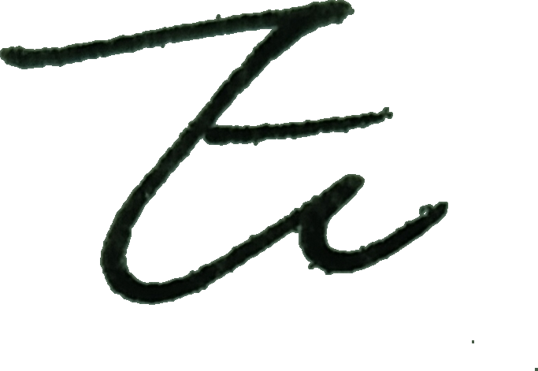

updated： 2026.9.23
New Things Recently: 于是，我的保研生活也告一段落了，大学生活进入最终章…
上新点解析:
- 更新了一篇博客，更新了本页面的 About me。
TODO：
- [ ] 一直想调整一下 Velotask，并做一下 1.0 版本的发布。
- [ ] 我做了一个新的匿名箱，但是还需要进一步的调整。
🏠 我是谁？
你好啊，你可以叫我 Epi ，然后你也可以叫我 自然周，这个名字是后来想的
Epi [/ˈɛpi/] 这个名字源自于 “Epiphany（顿悟）” 的简写，是不知从某处看来的一个单词，后来因为这个名字有点长于是就简写做了 Epi。在简写后这个名字又兼有了 “Epic” “Epiphyllum”“” 的解读方法，就一直这样子用下去了。
与英文相应：自然周 是 自然常数 e 和圆周率 的结合

这里是我的博客，目前学习生活比较充实所以可能更新的不是很频繁。给主播点点关注，什么时候想起来了可以回来看一眼！
我是北京科技大学计科专业的大四生，谈不上精通但是还是喜欢倒腾一些专业相关的事情。
这里可能会分享我的一些近期生活分享，一些可能会成为黑历史的感悟，和一些学习笔记。
但是由于不是很想再处理该死的 和其他插件的冲突，所以这些学习笔记逐渐搬家到了 pdf 中，我把他们用 openlist 共享了出来。
我是一个解谜爱好者，所以我会在这个博客里发布一些解谜活动相关的 Repo (or Writeup)。同时我有一个专门记录解谜相关的网站，在这里放置一个传送门，但是好久没有维护更新了，主要是自己精力有限，等到腾出时间会继续维护的。
⛹ 你的喜好？
因为是零零后，所以应该不算老登，不过我还挺乐意做一些赛博考古的，所以算是一个中登 haha。
TL;DR：音游体验家，ACG 爱好者，解谜爱好者，超轻度游戏玩家，术力口厨，…。
详细的展开说说：
- 漫：看的番不多，不过看过的都很有印象而且很会螺旋回复式的刷二创。不是很挑类型，大众的小众的都喜欢。由于年纪不大且接触互联网比较晚，所以没怎么看过所谓的老番。
- 曲：喜欢听，爱听，因为这个所以学了学日语，不过现在依旧是半吊子水平（
- 音：接触过的有 Malody，Phigros，Arcaea，Orzmic，BangDream，pjsk，DR3，Osu（但是因为本人太菜了所以不追求推分，纯享受派，
不会乌蒙 dx 但是希望哪天能试一试） - 游：解谜类爱好者（见证者，传送门，baba is you 等），可能会对一些互联网早期的一些益智小游戏情有独钟。
- 谜：puzzlehunt 享受派，目前热衷于制作各种谜题的可视化解析
- 业：是学生，大二
- 杂：魔方，
一些较便宜的乐器（actually 最近又对钢琴很感兴趣），象棋，日麻，诗词……
完全就是各种享受派，只在意游玩过程。话说 “漫曲音游谜业杂” 还挺有味道的。
我设计了一个存放我近期品鉴的番剧，音乐，游戏的页面，欢迎前去看看，也欢迎评论区安利～传送门
这里放置一个匿名留言箱，有什么想问的想吐槽的想问我的欢迎扫码！